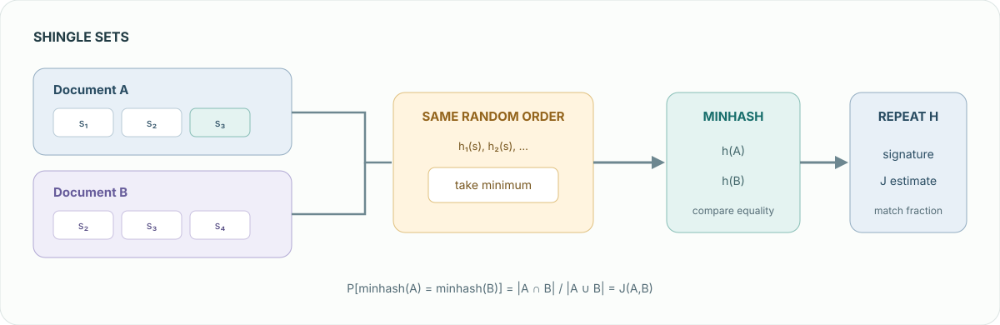
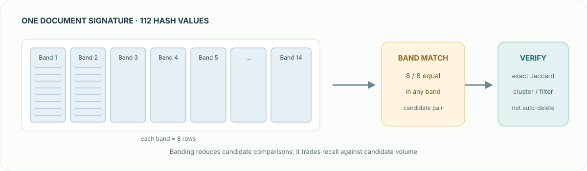

MODULE 08 / LLM DATA ENGINEERING
MinHash 近邻去重
从 Jaccard 相似度到 MinHash 签名与 LSH：用概率推导解释为什么少量哈希就能筛出海量近重复文档。
两个网页只改了几处标点、标题或广告，SHA-256 就会完全不同。怎样在不做 全量两两比较的前提下，快速找到“足够相似”的文档候选？
把文档变成 Shingle 集合
近似去重通常先把文本转换为特征集合。对分词序列使用连续 -gram（也称 shingle）：例如文本 “data cleaning scales” 的 2-gram 集合为 {“data cleaning”, “cleaning scales”}。若一个文档的集合为 ，另一个为 ，Jaccard 相似度定义为交集占并集的比例：
Jaccard 的优点是集合顺序不重要，且重复出现的同一 shingle 不会反复加权。缺点是短文档、不同语言、不同 tokenizer 或大量通用模板词都会影响相似度。选择 word 5-gram、character 7-gram 或段落 shingle，是模型设计的一部分。
MinHash：用最小值保留集合相似度

想象对全集中的 shingle 做一次均匀随机排列。分别取集合 和 中排名最靠前的元素（MinHash）。两个最小值相同的条件，是并集 中排第一的元素同时属于交集 。因此：
独立重复 次，得到长度为 的签名。签名相等位置的比例 是 Jaccard 的无偏估计；在理想独立假设下，方差为 。增加哈希数量能降低估计方差，但增加 CPU、存储和比较成本。
LSH：把签名拆成 Band，避免所有签名两两比较
即使签名只有 112 个值，直接比较 个文档仍然需要约 次比较。Locality-Sensitive Hashing（LSH）将签名分成 个 band，每个 band 有 行。只要任意一个 band 的 个值全部相同，就把文档对放入候选集合。

如果真实 Jaccard 相似度为 ，一个 band 全部相等的概率为 ；一个 band 不命中的概率为 。假设各 band 独立，则至少一个 band 命中的概率为：
这里的 决定了召回—候选数量的权衡。更多 band 通常提高候选召回，也会增加需要精算的候选对；每个 band 行数更大，则更偏向高相似度才命中。
FineWeb 的参数：不是“75% 就一定判重”
FineWeb 采用 word 5-gram、112 个 MinHash 函数，并拆成 14 个 band、每个 band 8 行。若任一 band 的 8 个 MinHash 全部相同，就将文档对视为重复候选。论文 Appendix E.1 给出的候选命中概率如下：
| 真实 Jaccard 相似度 s | 候选命中概率 | 如何理解 |
|---|---|---|
| 0.70 | 56% | 仍有较多相似对会漏过候选阶段 |
| 0.75 | 77% | 不是确定性阈值，只是目标附近的概率区间 |
| 0.80 | 92% | 大多数相似对会成为候选 |
| 0.85 | 98.8% | 高相似度对几乎都会命中 |
FineWeb 论文报告这套配置旨在以较低的计算与存储开销捕捉约 75% 及以上相似的文档，但边界附近不是硬阈值。论文明确比较了更多哈希函数的替代配置：更陡的曲线意味着更清晰的分界，也需要更多计算和签名存储。
工程流程与参数选择
- 统一文本规范化和 tokenizer；保存原始文本与规范化版本。
- 生成 q-gram 集合或哈希 shingle；明确去重的相似度对象。
- 对每个文档生成 H 个 MinHash 值，再按 拆分 band。
- 对相同 band key 分桶，生成候选对；不要全量 比较。
- 对候选对计算精确 Jaccard 或更严格的相似度，建立重复边。
- 做阈值敏感性分析：抽查假阳性、假阴性、短文档和模板文档。
交互练习：相似度变化时，LSH 多大概率命中？
下方固定使用 FineWeb 的 14 bands × 8 rows 参数，拖动 Jaccard 相似度查看理论候选概率。曲线是公式计算，不是模型训练测得的准确率。
本章参考资料
- Broder (1997), On the Resemblance and Containment of Documents.
- Penedo et al. (2024), FineWeb，§3.4 与 Appendix E.1。
- DataTrove MinHash implementation：signature、bucket、cluster 与 filter stages。
- Indyk & Motwani (1998), Approximate Nearest Neighbors: Towards Removing the Curse of Dimensionality.